Profile Cutting Gear Wheels
Profile cutting of gear wheels does not seem to have many
advocates on the Internet. In my opinion it has several advantages and
is the way that nearly all gear wheels should be cut.
Mark Winder
October 2005
The source code for the cog.pm module is available.
Comments and suggestions to
mail: Mark.Winder4 at btinternet.com
What Is Profile Cutting?
Profile cutting gear wheels is any method that involves a cutter moving
in
x and y plane. A good example is a traditional vertical cnc milling
machine
using a cylindrical cutter. These days there are many examples of other
types of cutting machine, but all can work on a similar
principle. This cannot be done with a non-cnc machine (well maybe
with a special fitting!) because x and y slides need to be moved
simultaniously.
Advantages of Form Cutting
The advantages of profile cutting are as follows:
- Within very wide limits the wheel and tooth parameters are not
dependent on the cutter but can be software generated.
- The same software can be used to generate wheels in a variety of
different materials, eg wood, and metal: historically different methods
have been required for wood.
- Unusual shapes are no problem, eg eleptical wheels.
- Use of general purpose machinery means that very large wheels can
be cut by those in possession of appropriate general purpose
machines.
The disadvantages are as follows:
- Thick wheels can pose a problem particularly when fine teeth are
required. This is particularly the case when using milling machines.
- Bosses on wheels may be time consuming or expensive if machined
out of a solid block.
- Unusual shapes can be a problem: eg worm, or bevels.
cog.pm
This document presents cog.pm, a Perl module that generates g code
suitable for a CNC milling machine for form cutting small gear wheels
out of sheet metal. The software is designed so that you may call the
functions with what ever parameters you desire and G-code for the wheel
will be generated.
The software currently covers horrelogical tooth shapes, spoked wheels,
and there is also a graham style escarpment and yoke.
There cog.pm uses one of two modules for generating output: G-code.pm
generates G-code in a file, gdcode.pm generates a jpeg image of the
outline that would be generated.
Parameters are provided for feed and multiple passes all of which can
be controlled from a high level.
A function for stacking objects one on top of the other, eg a pinion on
top of a wheel, is also provided. The stack routine automatically
machines out the space around the smaller top object so that the lower
object can be machined.
Some Examples
Below are some examples, with code, photographs of the finished
objects, and comments. Naturally these examples have been made over
time as the code evolves, so that I cannot promise absolutly that all
examples are currently error free, although I believe they are and
would like to hear from anyone one who thinks otherwise!
Example 1
Example 2
Example 3
Example 4
Example 1
Code
#!/usr/bin/perl
# This contains the cog cutting functions.
use
cog;
# This contains the jpeg output functions
use
gdcode;
# and this the G-code output functions
use
G-code;
# Actually you only need one of these.
$c=newcogpair cog(3.0,7,18); # make a
pinion and a wheel module 3,
# with 7 and 18 teeth.
$c->cutset({cuttersize=>0.125,passes=>3,passdepth=> -0.025
});
$c->{wheel}->hole(0.125);
$c->{pinion}->hole(0.25);
my $feed=3;
#my $g=new
G-code("test.ngc",$feed,5); #
for G-code out use this line
# output file, feed rate, tool number for offset commands
my $g=new gdcode("test.png",4.50 ,1300,1300);# for jpg use this line
# file, size in inches horizontally, x and y size in pixels
$g->ginit();
$c->{wheel}->cut($g,0,-0.75,0); # x,y,z.
$c->{pinion}->cut($g,0,1.25,0);
$g->gend();
# finalise graphics operations, write files etc.
This is about as simple as it gets. The code generates a large
jpg image, on your screen you may need to zoom in as the lines are just
a single pixel wide and some viewers do not show this at full
size. You can change the resolution to suit. Below is a 200 x200 image
produced by the code above.
Images
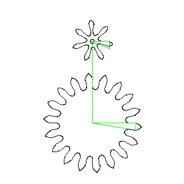 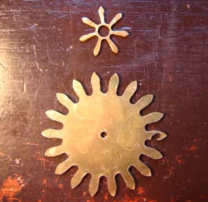
About The Images
The following points can be noted about the images:
- There is a fairly obvious mistake in the lower wheel on east-most
tooth. This while unfortunate, is nothing to do with any code!
- On first appearances the holes in the center of the wheels do
noyt appear to match those on the jpeg. In fact it seems to be missing
on the lower wheel on the jpeg. This is because the jpeg takes no
account of the size of the tool. The hole on the larger wheel, which is
1/8" is the same size as the cutter, so it is a simple plunge and would
be represented by one pixel on the Jpeg. The hole on the pinion would
show as a 1/8" hole on the Jpeg, since that how it has to move to
generate a 1/4" hole with a 1/8" cutter.
- The hole in the pinion is probably too big for this wheel!
- So if thats the case, why then do the teeth clearly not show
similar characteristics? The reason is that for holes, the cog.pm
calculates its own tool path, and the inbuilt G-code cutter
compensation
is not used, while for the teeth it is. So that what is plotted (after
turning on compensation) is exactly what you get. Sorry, you just have
to know this!
- Note in particular that these were the first two piieces I made,
and are nearly as small as you can go with a cutter as large as this. I
do not advocate mettal gears this size (2.5" accross) !!!
- The green lines in the jpeg are movements made with z > 0 ,
assumed to be non-cutting movements.
- Note that the order of operations is considered significant.
Normally, the exterior, at least, will be clamped. It is therefor
better to drill holes first and then cut the teeth since otherwise you
would be drilling in an otherwise unsecured piece of work. With
other clamping methods (double sided tape, vacuum tables etc) this may
not be an issue.
Gcode
The following GCODE is produced:. This is of course rather long, and in
subsequesnt examples I do not
intend to quote the code (It will be longer!) but it gives you an idea
of the output.
Click to see the G-Code
Example 2
Code
#!/usr/bin/perl
use cog;
use gdcode;
use G-code;
$VERSION=0.02;
# process options. Use getopts if you like.
my %opt;
$opt{allowed}='p';
@ARGV=grep { s/^-([$opt{allowed}])//?(($opt{$1}=1)&&0):1 }
@ARGV; # set options allowed in opt
grep { m/^-/ } @ARGV and die "Illegal option in @ARGV";
my ($g);
if ($opt{p})
{
$g=new gdcode("test.png",1.5,300,300); # this uses
the GD module to generate a .png file size 1950 pixels square.
}
else
{
my
$feed=3.0;
# feed rate for cut.
$g=new
G-code("test.ngc",$feed);
# and this produces G-code in the file test.ngc.
}
$c=newcogpair cog(1.6,7,16); # Creates a pair of meshing wheels, with
teeth module 1.6 (mm) one with 7 teeth, one with 16.
$c->{wheel}->hole(0.16);
$c->{wheel}->cutset(0.0625,4,-0.015); # cuttersize, passes,
passdepth
$c->{wheel}->trepan(5,0.2,0.175,0.35,0.05,1.0,0.05);
# $spoken, # number of spokes
# $wos, #
total width of spokes
# $bsf, # boss
radius in inches
# $rsf, # rim
size factor as proportion of pitch radius.
# $roe, # radius
of window edge for trepan
# $wobf, # width at
base factor, > 1 for narrower at spoke rim
# $rot, #
rotation factor for inside of spokes relative to outside 1= 1
revolution 0 to 0.2 are good.
$c->{wheel}->bossindent(0.25,-0.01,1); # diameter of indent,
depth of indent, how many passes, feedrate
$g->ginit();
$c->{wheel}->cut($g,0.0,0.0,0.0);
$g->gend();
Images
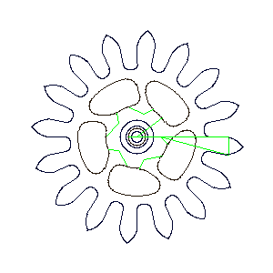 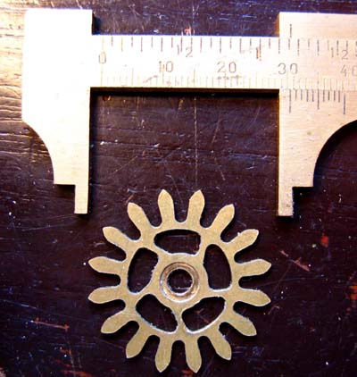
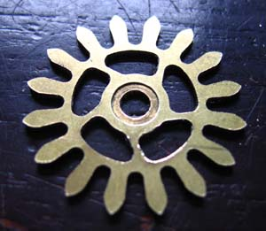
The caliper shown in the second picture has an upper scale in inches,
lower in cm.
Notes
A few new features are introduced in this example. First, the use
of a command line option to choose between graphical output and G-code.
Pretty essential in practice, but absolutly nothing to do with the
example in fact.
Second, I introduce the trepan function. This allows a wheel to be
"lightened" by cutting out sections from the center of the wheel . The
result is that the rim is supported by spokes. This function allows the
number of spokes to be varied, and also allows the center of the wheel
to be "roted" with respect to the rim. (Think spokes made of rubber.)
This is really for artistic effect. But you could argue that it
increases the strength of the wheel. You can also choose to have
tapered spokes. Naturally, since you are going to cut this out with a
circular tool, all window corners must be radiused at a radius greater
than the tool radius.
Lastly there is a feature called bossindent that is implemented on this
wheel. This creates a small circular indentaion which was to be used to
aid in registration if fixing an external boss to the wheel. Not sure
if this is useful or not.
Example 3
Code
#!/usr/bin/perl
use cog;
use gdcode;
use G-code;
$VERSION=0.02;
my %opt;
$opt{allowed}='p';
@ARGV=grep { s/^-([$opt{allowed}])//?(($opt{$1}=1)&&0):1 }
@ARGV;
grep { m/^-/ } @ARGV and die "Illegal option in @ARGV";
my ($g);
if ($opt{p})
{
$g=new gdcode("test.png",1.25,800,800); # this uses
the GD module to generate a .png file
}
else
{
my
$feed=5.0;
# feed rate for cut.
$g=new
G-code("test.ngc",$feed);
# and this produces G-code in the file test.ngc.
}
$c=newcogpair cog(1.6,9,16); # Creates a pair of meshing wheels, with
teeth module 1.6 (mm) one with 9, one with 16 teeth.
$c->{wheel}->cutset(0.0625,4,-0.0125); # cuttersize, passes,
passdepth
$c->{pinion}->{passes}=8;
# need more depth on pinion.
$c->{pinion}->{fillet}=1;
$s=new stack(0.125,4,-0.025,-0.005); #
$cuttersize,$passes,$passdepth,$facedepth
$boss=new boss(0.125,8,-0.0125,0.13);
$boss->{name}='Jim';
# used in comments in G-code
$c->{pinion}->{name}='pinion';
# used in comments
$c->{wheel}->{name
}='wheel'; # used
in comments
$s->add($boss,$c->{pinion},$c->{wheel});
$g->ginit();
$s->cut($g,0,0,0);
$g->gend();
Images
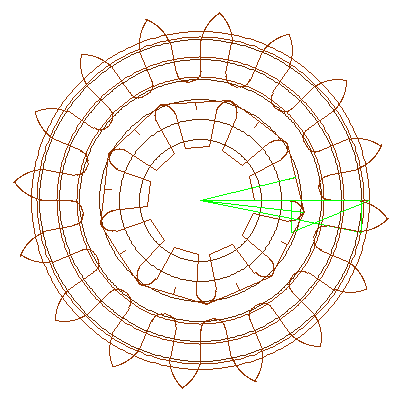 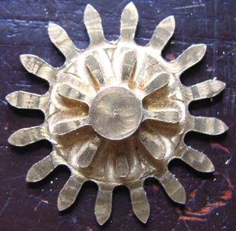 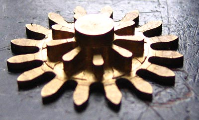
Notes
This example introduces the concept of stacked objects. The idea is
that objects can be defined and then stacked one on top of the other.
The cut function for the stack object calls the individual cut
functions for all objects in the stack, and also inserts extra objects
that are necessary for the machining to go ahead. These objects extra
objects are of two types. Firstly, if two or more objects are
machined on top of each other, it is assumed (at the very least) that
the top object is smaller than the lower one (other wise you couldnt
machine it could you!) An anulus is machined outside the top object so
that the lower object can be machined. Secondly this anulus is widened
so that the top anulus is at least as wide as the anulus or all objects
below it. This (nearly) enables wheels to be stacked on top of each
other and machiened from a soliid piece of metal. In the exaple 3 items
are stacked. The wheel from example 2, a pinion to fit it with as many
leaves as I could fit in, and lastly a boss with the same diameter as
the dedendum of the pinion. All this out of a solid piece of brass 1/4"
thick. I use two cutters. A big one for roughing out the anulus's 1/8""
and 1/16"" for cutting the teeth. Note that except for the
outermost cut, cuts cutting an annular space are at slightly different
radii and appear double in the diagram above.
The second type of cut that is made here, I call a fillet. This is to
get round the problem that when you cut a wheel "one sided" as it were,
and leave it atached to a back plate, as is the case with the pinion,
its no good just cutting out the profile, as this leaves some
pieces attached to the wheel. These are removed by the lines that
go into the gaps between the teeth. The algorithmn is very ad-hoc but
seems to work ok-ish in the few cases I've tried. To activate the
fillet function you need to set the fillet flag as is done in the
pinion above. The remains of the fillets can be seen well in the
second picture: it seems like I didnt go quite deep enough when I made
this piece.
There are many objects all generating similar code, but crucially with
different numbers. In order to debug this I have allowed objects to
have names that can be used in the comments printed out in the G-code
and that you can see as the metal is being cut. In the above, the wheel
boss is called Jim.
Its not shown at any stage here, but a manual tool change at the right
point is needed here. How you do this will depend on your hardware.
An attempt has been made to make cuts at different depths come out in
different colours. If you stare very hard at the image you will see
that some cuts are black and some brown. The blacker lines are supposed
to be nearer the viewer. You'll notice that the two innermost
circles in the image above are black for example. This doesnt work
well, not sure why.
There is no particular reason for there being no hole in the center of
this piece.
Example 4 - A Graham Escapement
Its worth pointing out that far more able people than me have written
whole books on the graham escapement. I have concentrated on
making it possible to make. This work is not completed yet and although
I have made one escapement, so far it has not been possible to test
this.
Code
Images
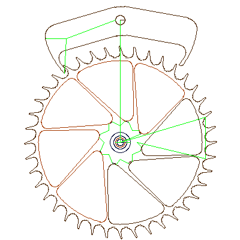 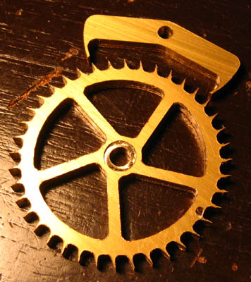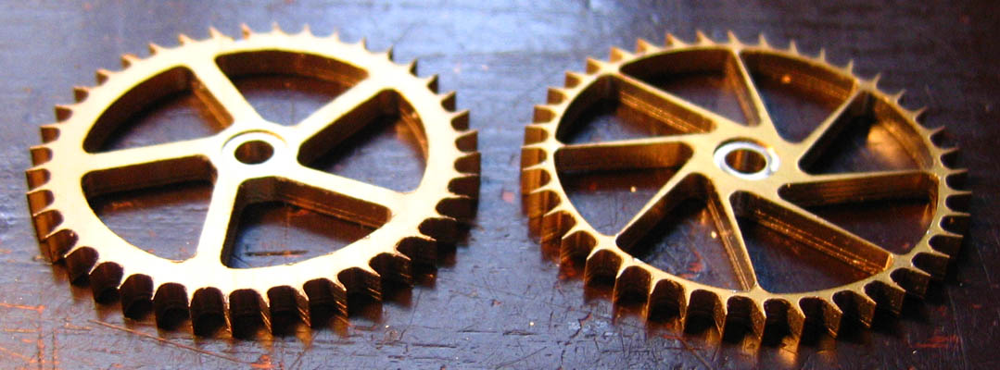
Notes
The wheel on the left was a first attempt. After making it (and yes
there is one small mistake that probably makes the wheel
unusable in any case!) I decided that it was built like a tank and
that as angular inertia is very important to the graham escapement a
second attempt was warranted. This had the following changes:
- Much thinner rim.
- Many more spokes to give more even support to the thinner rim
- Tapered spokes to further decrease the angular momentum.
- A slightly deeper boss indent, 0.015 instead of 0.01 inches.
- Bigger boss at the wheel center. (Weight at the wheel center is
not an issue so far as momentum is concerned. )
- The Angle subtended at the tooth top was changed from 6 to
8 % of the tooth gap, making the tooth tops wider and less sharp. I
doubt you can see
that in the picture though.
The new wheel weighs about half the old one, and has a far lower moment
of
inertia.